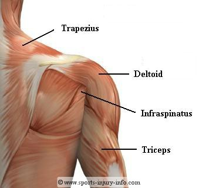
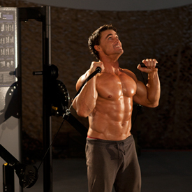
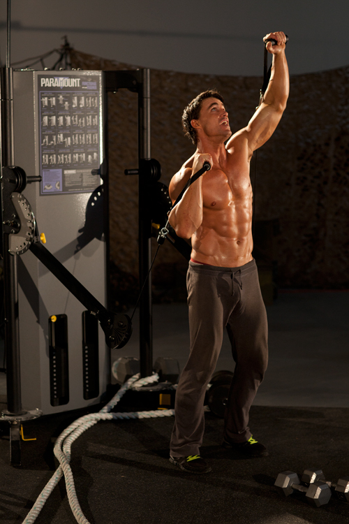
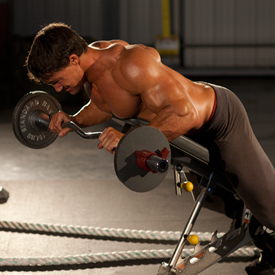
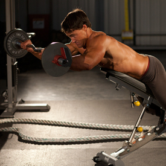
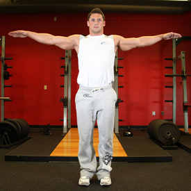
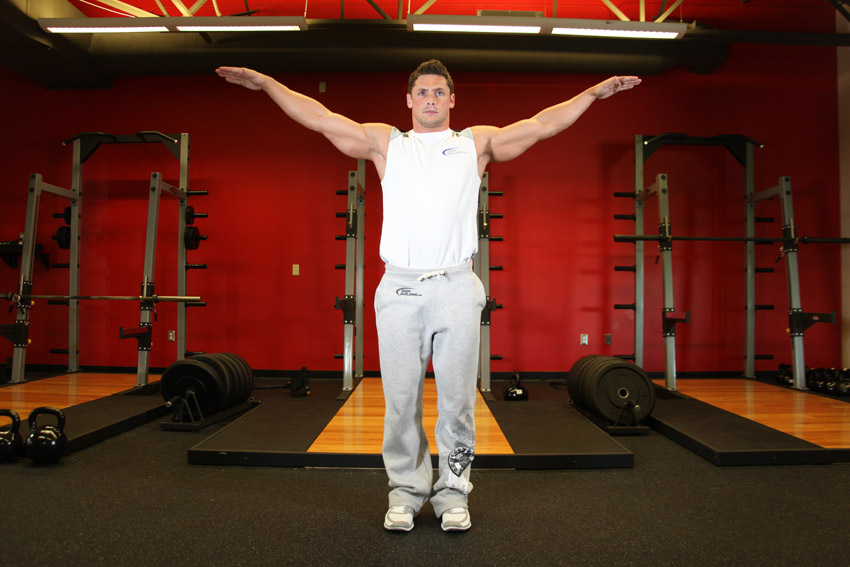
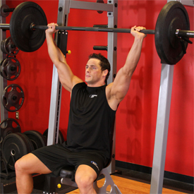
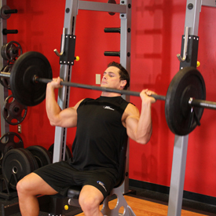

<!DOCTYPE html PUBLIC "-//W3C//DTD XHTML 1.0 Strict//EN" "http://www.w3.org/TR/xhtml1/DTD/xhtml1-strict.dtd">
<!--
Design by Free CSS Templates
http://www.freecsstemplates.org
Released for free under a Creative Commons Attribution 2.5 License

Name       : Open-Air
Description: A two-column, fixed-width design with dark color scheme.
Version    : 1.0
Released   : 20120818

-->
<html xmlns="http://www.w3.org/1999/xhtml"/>
<?php
session_start();
include('mygymdbConnect.php');
include('SignUp.php');
?>
<html>
    <head>
        <title> MyGym</title>
        <div style="position :absolute;top:20px;left:40px">
            <p><h2>MY<br/> 
                    GYM 
                    <br/></h2></p></div>
        <div style="position: absolute ;left:  200px; top: 20px;"> </div>
        <div style="position:absolute;top:37%;left:35%"/>
        <link href="http://fonts.googleapis.com/css?family=Oswald:400,300" rel="stylesheet" type="text/css" />         

        <link href="style.css" rel="stylesheet" type="text/css" media="screen" />
        <a href="home.php" style="text-decoration: none;color: black;font:serif;font-weight: bold;  ">Home |</a>
        <a href="About.html" style="text-decoration: none;color: black;font:serif;font-weight: bold;  ">About |</a>
        <a href="sign up.html" style="text-decoration: none;color: black;font:serif;font-weight: bold;  ">Sign up |</a>
        <a href="Activities.html" style="text-decoration: none;color: black;font:serif;font-weight: bold;  ">Activities |</a>
        <a href="Trainers.html" style="text-decoration: none;color: black;font:serif;font-weight: bold;  ">Trainers |</a>
        <a href="classes.html" style="text-decoration: none;color: black;font:serif;font-weight: bold;  ">Classes |</a>
        <a href="Training.html" style="text-decoration: none;color: black;font:serif;font-weight: bold;  ">Train |</a>   

    </head>

    <body>
        <div style="position: absolute;left: -300px">
            <table  cellpadding="10" cellspacing="10" height="400px" width="1200px">
                <tr><td></img></td>
                    <td><b>Description</b><br></br>The muscles of the shoulder bridge the transitions from the torso into 
                        the head/neck area and into the upper extremities of the arms and hands. For that reason, and because
                        of the dexterity of the shoulder joint itself, the shoulder's musculature is complex and 
                        runs from massive prime mover muscles to finer stabilizer muscles and articulations.

                    </td></tr>
            </table></div>
        <div style="position: absolute;left: -200px;top: 500px" >
            <table border="2"  cellpadding="10" cellspacing="10" align="center">
                <tr><td><b>EXERCISES</b></td></tr>
                <tr><td></img></br>
                        </img></td>
                    <td><b>Alternating Cable Shoulder Press</b>
                        </br>
                        1-Move the cables to the bottom of the tower and select an appropriate weight.
                        </br>2-Grasp the cables and hold them at shoulder height, palms facing forward. This will be your starting position.
                        </br>3-Keeping your head and chest up, extend through the elbow to press one side directly over head.
                        </br>4-After pausing at the top, return to the starting position and repeat on the opposite side.


                    </td>
                </tr>
                <tr><td></img></br>
                        </img></td>
                    <td><b>Anti-Gravity Press</b></br>
                        1-Place a bar on the ground behind the head of an incline bench.
                        </br>2-Lay on the bench face down. With a pronated grip, pick the barbell up from the floor. Flex the elbows, performing a reverse curl to bring the bar near your chest. This will be your starting position.
                        </br>3-To begin, press the barbell out in front of your head by extending your elbows. Keep your arms parallel to the ground throughout the movement.
                        </br>4-Return to the starting position and repeat to complete the set.
                    </td>
                </tr>
                <tr><td></img></br>
                        </img></td>
                    <td><b>Arm Circles</b>
                        </br>1-Stand up and extend your arms straight out by the sides. The arms should be parallel to the floor and perpendicular (90-degree angle) to your torso. This will be your starting position.
                        </br>2-Slowly start to make circles of about 1 foot in diameter with each outstretched arm. Breathe normally as you perform the movement.
                        </br>3-Continue the circular motion of the outstretched arms for about ten seconds. Then reverse the movement, going the opposite direction.
                    </td>
                </tr>
                <tr><td></img><br></br>
                        </img>  </td>
                    <td><b>Barbell Shoulder Press</b>
                        </br>1-Sit on a bench with back support in a squat rack. Position a barbell at a height that is just above your head. Grab the barbell with a pronated grip (palms facing forward).
                        </br>2-Once you pick up the barbell with the correct grip width, lift the bar up over your head by locking your arms. Hold at about shoulder level and slightly in front of your head. This is your starting position.
                    </br>3-Lower the bar down to the shoulders slowly as you inhale.
                    </br>4-Lift the bar back up to the starting position as you exhale.</td>
                </tr>
            </table>
        </div>
    </body>
</html>